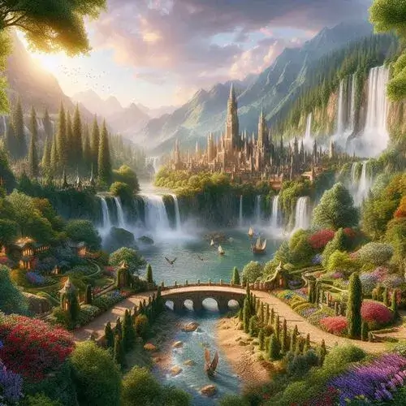
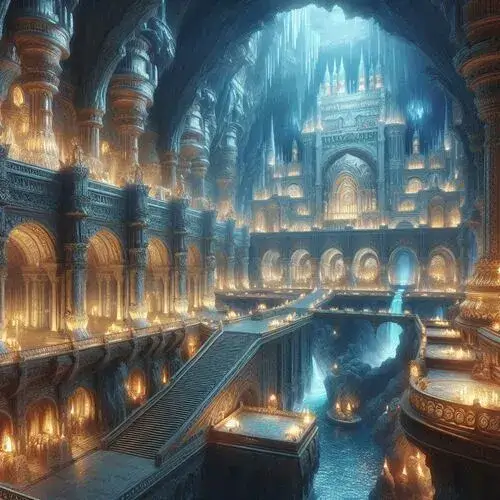
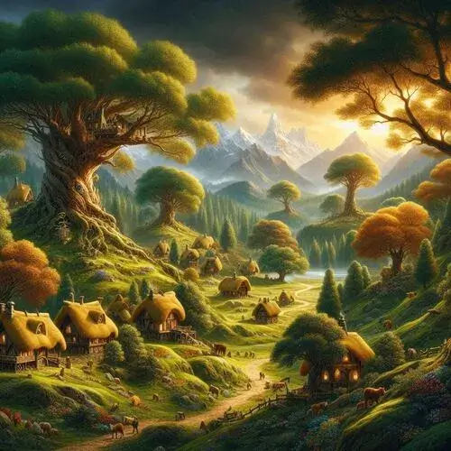

Fangorn Forest is one of the last remnants of the vast primordial forests and home to the Ents, tree-like beings who are the shepherds of the trees.
The White Tree of Gondor in Minas Tirith is a symbol of the kingdom's endurance and lineage and was originally brought from the Undying Lands.
The island where the kingdom of Numenor is located was a gift from the Valar, and Numenoreans are known for their long lifespans and advanced knowledge.
2024 Statistics
The population of Gondor is about 2 million.
The Riders of Rohan have over 10,000 horsemen.
Middle Earth is about the same size as Europe.
The One Ring is destroyed! It just lived for 4,500 years.
Mount Doom is 4,500 meters high.
Climate
The Shire: Perfect place to visit. Always with temperate climate at the perfect temperature.
The Misty Mountains: cool, alpine climate all year round.
Harad: Hot, arid place. Total desert. Not a place for just anyone, but a few enjoy that sort of thing.
Fangorn Forrest: lush, moist and temperate.
Top Attractions
Rivendell (Imladris): The peaceful Elven haven nestled in the Misty Mountains, home to Elrond.
The Shire: The idyllic and picturesque homeland of the Hobbits.
Mirkwood: It's a vast and mysterious forest, home to Thranduil’s Elven kingdom.
Khazad-dûm: With the Balrog gone, it's not restored to its former glory. Visit the grand, ancient underground dwarf city.
The great city of Gondor.

Rivendell. The main city for the arts.

Khazad-dûm, the city inside the mountain.Fangorn Forrest, an ideal place to excape into nature.

The Shire, a place filled with Hobbits who love peace and quiet.The Misty Mountains